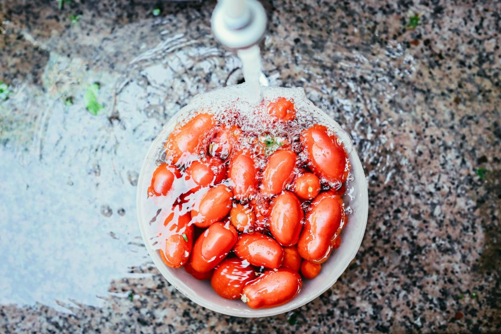

15 Scrumptious Summer Tomato Recipes You Need to Try!

Tomatoes of all shapes, colors, sizes are ripe for the picking and I can't seem to get enough of them. I eat my little golden cherry tomatoes straight from the stem while they're still warm from the sun. If you love tomatoes as much as I do, you'll adore the following 15 tomato recipes. One of my favorite pasta dishes, when the weather is hot, is an Italian dish called Pasta l'Estate, or aptly, Summer Pasta. The pasta is served hot then topped with a deliciously simple chilled tomato sauce. The temperature contrast between the two is both unexpected and refreshing! Give it a try.
I also love our Tomato Water Martini, a concoction we created ten summers ago where we strain the juice of tomatoes to extract the "water," the light and refreshing essence of the tomato to use in a gin or vodka martini. This is a far cry from a Bloody Mary, so don't expect a heavily seasoned beverage. You'll love it though on a hot evening! From some of our Foodista contributors, we have recipes ranging from a flavorful chilled gazpacho soup that's topped with spicy grilled shrimp, a hearty breakfast of baguette filled and baked with tomatoes, cheese, and bacon, Piedmontese-style roasted sweet red peppers stuffed with tomatoes and anchovies, and more! If you're gluten-free, like me, any of these recipes can easily be adapted to suit.
Classic Gazpacho with Spicy Grilled Shrimp
Contributed to Foodista by Taste and See
This chilled gazpacho soup is loaded with jalapenos, cucumbers, red peppers, shallots, tomatoes, olive oil, and sherry vinegar, then topped with spicy grilled shrimp. It's a perfect meal on a hot summer day!
Breakfast Boat with Cheese, Bacon & Tomatoes
Contributed to Foodista by Happy Foods Tube
Fill baguettes with cheese, bacon, tomatoes, onions, and eggs, and you have a deliciously hearty breakfast everyone will love!
Roasted Swordfish with Manzanilla Olives, Cherry Tomatoes, and Capers
For an easy dinner, serve grilled swordfish steaks atop a simple sauce of simmered tomatoes, Spanish olives, garlic, and capers. Add fresh parsley and lemon juice and serve.
Kachumber Salad: Indian Marinated Tomato and Herb Salad with Lamb Kebabs
This delicious lime marinated Indian tomato salad features summer's ripest tomatoes. Their sweetness, along with cooling cucumbers, pair beautifully with aromatic spices such as cumin, chile, and masala. Top it with grilled lamb kebabs and serve as a main dish.
Tagliatelle with Burrata, Tomatoes, and Pine Nuts
Contributed to Foodista by Taste and See
This easy-to-make pasta dish features classic Italian ingredients like tomatoes, pine nuts, and creamy soft burrata cheese (think super soft mozzarella!). It's ready in minutes and oh so good!
Piedmontese Stuffed Peppers
Contributed to Foodista by Food for a King
This Northern Italian dish is perfect as a side dish or entree. Sweet red peppers are stuffed with tomatoes and salty anchovies then roasted until tender. It's a beautiful roasted salad that's so easy to make and so delicious!
Cilantro Lime Grilled Shrimp with Pineapple Salsa
Contributed to Foodista by Taste and See
Tasty shrimp are marinated in garlic, cilantro, and lime, then grilled and topped with a sweet and zesty salsa of pineapple, jalapeno, red onion, and tomatoes.
Panzanella - Classic Italian Tomato and Bread Salad
Contributed to Foodista by Discover Delicious
Panzanella is a great way to use up stale bread. This classic Italian salad includes chunks of crusty bread, tomatoes, cucumbers, onion, basil, olives, and capers that are dressed in a simple vinaigrette.
Creamy Cheesy Ham Tomato Sauce
Contributed to Foodista by Loaves and Dishes
This may not be such a summery dish, but oh is it tasty! Think cheesy, tomatoey ham baked with herbs and wine. Divine!
Tomato, Corn and Avocado Salad with Cilantro Lime Vinaigrette
Contributed to Foodista by Behind the Plates
This simple salad packs in some of summer's most popular produce: tomatoes, fresh corn, and avocado. The salad is then tossed in a zesty vinaigrette of lime juice, red wine, olive oil, fresh cilantro, and salt and pepper. It's a great accompaniment to any barbecue menu!
Fried Mozzarella Balls with Homemade Tomato Sauce
Contributed to Foodista by Happy Foods Tube
These tasty mozzarella balls are the perfect snack for any occasion. Kids love them too! Get some of those little mozzarella balls (bocconcini), coat them in an eggwash and breadcrumbs, freeze, then fry. Serve them up with an easy to make tomato sauce for dipping.
Heirloom Tomato, Basil, and Olive Oil, Wine Sauce over Pasta
Contributed to Foodista by CaliZona
Some of the most delicious dishes are those consisting of just a few - but high-quality - ingredients. Heirloom tomatoes, fresh basil, garlic, a good olive oil, and a nice dry white wine make the perfect sauce for any pasta.
We created this Tomato Water Martini recipe by using the strained juice - or what we call the "water" - of plump tomatoes, which gives you the wonderful essence of the fruit. The "water" is different than using the whole pureed tomato juice. The result is wonderfully light yet still packs a punch of tomato goodness! Use gin or vodka and garnish with a slice of tomato and some basil leaves.
This easy twist on a classic French country dish combines creamy Brie with squash, zucchini, eggplant, and tomatoes
This Italian pasta recipe celebrates summer with the freshest and ripest tomatoes. It's easy to make and tastes like you've captured the freshness of the season! The uniqueness of this dish is that the pasta is served piping hot and the sauce chilly cold, creating a temperature contrast that is both refreshing and unexpected. Once introduced to the heat of the pasta, the flavors of the tomato and olive oil burst with flavor.
Article credit: Foodista / CC BY
Photo credits: Foodista / CC BY, Davide Ragusa